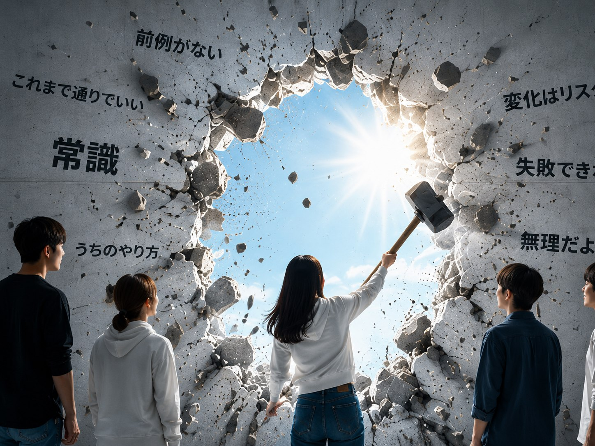

PROBLEM
こんな悩みありませんか？
若手があまり
新しい取り組みが
現場に定着しにくい
管理職と若手で
考え方にズレを感じる
採用・広報が
若手に届いているか不安
気づかないうちに、会社の「当たり前」が固定化し、変化が見えにくくなっているかもしれません。
APPROACH
若手の問いで、
当たり前を揺さぶる
外からの新鮮な問いが思考を刺激し、社内の対話を生み出します。
それは、これからの時代に必要な変化のきっかけになります。
なぜ、今のやり方を続けているのか
その考え方は、今の時代にも合っているのか
もっと違う進め方はないのか
PROGRAM
若手の視点と社内の対話をつなぐ4つのステップ
若手発散セッション
組織のテーマに対して、若手人材が自由に意見や仮説を出します。
現場の発散セッション
現場で働く人が自分の考えや背景を言葉にし、課題を整理します。
問いの循環・共有
若手の発想と現場の知見を照らし合わせ、違いと可能性を重ねます。
小さな実践へ
新たな発想や改善案を、具体的な行動へつなげます。
OUTPUT
実施後に残るもの
若手視点の
違和感リスト
社内だけでは気づきにくい前提や見え方のズレを整理します。
意見交換のための
問いリスト
一人ひとりが自分の考えを言語化しやすくする問いを残します。
小さく試せる
改善アクション
すぐに完璧を目指さず、現場で試せる一歩に落とし込みます。
採用・広報への
改善ヒント
若手に伝わる見せ方や言葉の違和感を、次の改善に活かします。
GOAL
自分たちで変える組織へ
外部が答えを与えるのではなく、対話を通じて一人ひとりが考え、語り、行動できる状態をつくります。
プログラムについて相談しませんか？
組織の課題や実施時期に合わせて、最初に試しやすい形をご案内します。料金は個別にご相談ください。
自社に合うか相談する